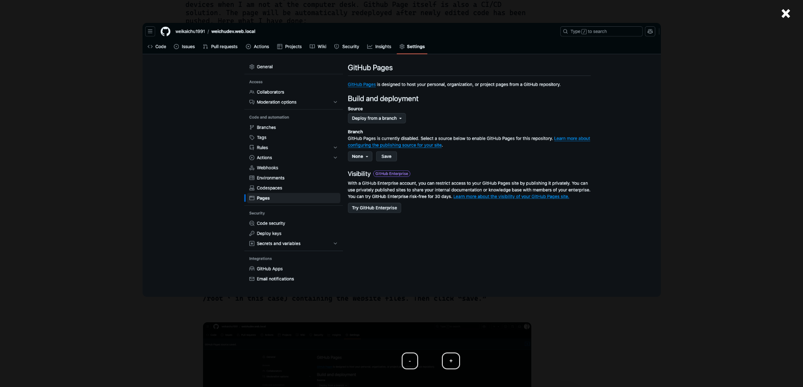

Creating the frontend of my website with Github Page
Step 01 | Preparation - Document Management
1. Directory File Structure:
Description:
The HTML, CSS & JS files for the main page are saved in the root directory of the website.
The sub-directory “works-pages” and other sub-dir. are created to store the web files of other sub sections of the website.
Templating subpages responsive behaviours and style - In each sub-dir., a mutual CSS file and JavaScript file will be shared by different article HTML hosted in the children folder (ex: “terraform-rg”) of the sub-directory.
2. Using Github Page to host the static version of my website
I started to building my website as a static website, and I was eager to find a free of cost method of hosting my website so that I can review my website through mobile devices when I am not at the computer desk. Github Page itself is also a CI/CD solution. The page will be automatically redeployed after newly edited code has been pushed. Here what I have done:
-
Go to ‘setting’ of the Github repository containing the HTML, CSS and JS files of the website.
-
Change the “Branch” to main (or other desired branch) and assign the folder (’ /root ‘ in this case) containing the website files. Then click “save.”
-
Navigating to Github Action, and you will find the website has been automatically built and deployed.

-
Click the completed job and the url to access the website will be found under the deploy job node.

Now I can use the url to check the deployed website wherever and however I want!
3. Using The VS Code Extension ‘ Live Preview’ to Review the Visual Result In Real Time As Soon As The code files are edited.
-
The extension installation page in VS Code

-
The application of the extension.
To preview the web page, clicking the window with magnifyinf gladd icon"
Step 02 | Creating container for limiting the width of the viewport
In order to make sure the web elements that I have included not overflow outside the viewport, I created a viewport container overarching the web page interface to constrain the size of the area where the elements can reach by specifying the max-width or min-width of the media. The following code showcase the code that I have included in the project file:
HTML:
Initiating the viewport container in the meta section of the HTML file.
index.html
CSS:
style.css
- Firstly, assigning the maximum viewport width that you want the container to impose on the webpage visual.
- Secondly, before diving into the detail setting of each content module of the webpage, setting up the parameters that will apply to the whole body of the website regardless the media viewport size, such as webpage’s foundational colour, thematic font family, padding size to the edge of the screen.
- Thirdly, with @media() media queries, specifying the max-width or min-width of the viewport in accordance to the size of the device screen to setup the foundation of the responsive mechanism of web viewing.
- Last but not least, starting to style content modules and elements by placing the styling code in the media query bucket.
Step 03 | Creating the Navigation Bar
HTML:
- Creating a module with
divelement for the whole navigation bar secsion. - using
navandulto define the navigations links connecting to the subpages, my Linkedin page and triggering the emailing function.
index.html
CSS:
- Starting styling the navigation module in the media query bucket for the computer or tablet-friendly viewport size (
@media (min-width: 600px)). - After finishing styling the elements for the computer or tablet-friendly viewport size, moving on to the media query bucket that is for mobile-friendly viewport size (
@media (max-width:600px)). - Moving on to the JavaScript & come back to the CSS file later to further edit the menu-icon and navigation links. Making sure the menu-icon is hidden within the bigger viewport and shown in the smaller viewport.
style.css
JavaScript:
- This code show or hide navigation links when a menu icon is clicked. This a responsive web navigation menu for mobile screen.
- Firstly, selecting the HTML element with the ID
menu-iconusingdocument.getElementById()function. - Adding an event listener
.addEventListener('click', function() { ... })to the selected element that listens for aclickevent. When the element is clicked, the function inside the event listener is executed. - Inside the event listener function, using
document.getElementById()again to select the elementnav-linksand assigns it to the constant navLinks. - Using
navLinks.classList.toggle('active')to create the mechanism of showing and hiding the menu list.
script.js
Step 04 | Creating my project works intro. section
HTML:
- Creating the main title and subtitle of this module. (class: workintro-title )
- Using multiple elements to create cards (class: work-example ) in a technical topic catalogue (class: myWorks_menu ) which links to various work example articles.
- Creating buttons linking to pop out pages (class: overlay1 - overlay5). Each pop-out page will overlay on main page containing work examples menu related to 1 of the 5 technical topics.
💡 The code snippet here only demonstrates the HTML code belonging to one of the technical topics. Please refer to my repository for the full HTML code.
index.html
JavaScript:
Overlay Button Click Handlers:
- Adds click event listeners to buttons with IDs openOverlayBtn1 to openOverlayBtn5.
- When a button is clicked, it sets the display style of the corresponding overlay (overlay1 to overlay5) to flex, making it visible.
Overlay Close Functions:
- Defines functions closeOverlay1 to closeOverlay5 that set the display style of the corresponding overlay to none, which will hide the pop-out page.
script.js
Step 05-1 | Creating the web background geometry using JavaScript - Wave Noise Pattern
HTML:
Creating Canvas Placeholder for the JS Generated Geometry
- Creating a module using div with a class called “background-circle”. In side the
divmodule,canvaselement creates a placeholder to create visualisation space for the JavaScript generated graphic elements, which is a gradient circle here in my website.
- Creating a module using div with a class called “background-circle”. In side the
index.html
JavaScript:
script.js
Canvas Setup:
const canvas = document.getElementById('myCanvas');: Get the canvas element by its ID.const ctx = canvas.getContext('2d');: Get the 2D drawing context of the canvas.const width = canvas.width;: Get the width of the canvas.const height = canvas.height;: Get the height of the canvas.const centerX = width / 2;: Calculate the X-coordinate of the canvas center.const centerY = height / 2;: Calculate the Y-coordinate of the canvas center.const radius = width / 2;: Set the radius for the circle to half the canvas width.
Function Definition:
function drawWaveCurve(ctx, startX, startY, amplitude, frequency, phase, length): Define a function to draw a wave curve.ctx.beginPath();: Start a new path.ctx.moveTo(startX, startY);: Move to the starting point of the wave.- Loop through the X-coordinates to draw the wave:
const y = startY + amplitude * Math.sin(frequency * (x - startX) + phase);: Calculate the Y-coordinate using a sine function.ctx.lineTo(x, y);: Draw a line to the calculated point.
ctx.stroke();: Render the wave curve.
Canvas Drawing:
ctx.clearRect(0, 0, width, height);: Clear the entire canvas.ctx.save();: Save the current context state.ctx.translate(centerX, centerY);: Translate the context to the center of the canvas.ctx.rotate(30 * Math.PI / 180);: Rotate the context by 30 degrees (converted to radians).ctx.translate(-centerX, -centerY);: Translate back to the original position.
Draw Circle and Waves:
ctx.beginPath();: Start a new path for the circle.ctx.arc(centerX, centerY, radius, 0, 2 * Math.PI);: Draw a circle centered at the canvas center.ctx.clip();: Clip the drawing area to the circle.- Loop to draw multiple wave curves:
- Calculate random starting Y-coordinate, amplitude, frequency, and phase for each wave.
ctx.strokeStyle = rgba(255, 255, 0, ${Math.random() * 0.5 + 0.5});: Set a random stroke color with random opacity.ctx.lineWidth = 1;: Set the line width to 1.drawWaveCurve(ctx, startX, startY, amplitude, frequency, phase, length);: Draw the wave curve using the defined function.
ctx.translate(-centerX, -centerY);: Translate back to the original position.
CSS:
style.css
Configuring the position and the size of the webpage background geometry:
- Using styling to customise the position and size of the JavaScript generated graphic elements. The
z-indexattribute allows the image move backward becoming the backdrop of other HTML elements overlapping on the top of it.
- Using styling to customise the position and size of the JavaScript generated graphic elements. The
Step 05-2 | Creating the web background geometry using JavaScript - Gradients Moons
HTML:
Creating Canvas Placeholder for the JS Generated Geometry
- Creating a module using div with a class called “background-circle”. In side the
divmodule,canvaselement creates a placeholder to create visualisation space for the JavaScript generated graphic elements, which is a gradient circle here in my website.
- Creating a module using div with a class called “background-circle”. In side the
aboutMe.html
JavaScript:
aboutMe.js
- Firstly, using Canvas API to set up a 2D canvas that placed at the placeholder created by the
canvaselement in the HTML file. This will be the virtual drawing board for JavaScript to generate the graphical content. - Secondly, creating a radial gradient property using
ctx.createRadialGradient(x0, y0, r0, x1, y1, r1)method. The parameters define two circles: the inner circle with center(x0, y0)and radiusr0, and the outer circle with center(x1, y1)and radiusr1. The parameterscanvas.width/2, canvas.height/2, 0define the inner circle, centered at the middle of the canvas with a radius of 0. These parameters0, canvas.height/2, canvas.widthdefine the outer circle, centered at the left edge of the canvas vertically centered, with a radius equal to the canvas width. - Lastly, start drawing the shape using the method
beginPath(). Usingarc(x, y, radius, startAngle, endAngle)method to define the the radius and angles of the arc in radians. The parameterscanvas.width / 2, canvas.height / 2set the center of the arc to the middle of the canvas.canvas.width / 2sets the radius of the arc to half the width of the canvas, making it a circle that fits within the canvas. The parameters0, 2 * Math.PIdefine the start and end angles of the arc in radians.0is the start angle, and2 * Math.PIis the end angle, which completes a full circle.
CSS:
aboutMe.css
Configuring the position and the size of the webpage background geometry:
- Using styling to customise the position and size of the JavaScript generated graphic elements. The
z-indexattribute allows the image move backward becoming the backdrop of other HTML elements overlapping on the top of it.
- Using styling to customise the position and size of the JavaScript generated graphic elements. The
Step 06 | Others
By using HTML and CSS code, I also created a web page module for showing my selected blogs, my career interest with the link to my LinkedIn profile and a footer of my website providing another set of identical navigation bar.
💡 Please refer to my GitHub repository to look at the full code.
×
troubleshoot Notes
Issue 01 | Forcing Fonts
I used a font-family called ‘ Cascadia Code ’ and somehow I noticed that the website is not displaying the right font-family on google browser and iOS Safari browser.
Fix:
I used the
@font-facerule in CSS to make sure the font-family is loaded when my website is accessed.💡 Note:
- Making sure the "Cascadia Code" font files are in the formats needed.
.woff,.woff2formats have better compatibility across browsers. - Placing font-face rule at the very beginning of the CSS file to make sure it is loaded across the website as soon as the website has been loaded.
- Making sure the reference URL is set correctly based on the web files directory structure. (./ or ../ to begin with)
Issue 02 | Missing Zooming Control for Image Focus View
Error:
Image can't be zoomed in and out after entering the the focus view
Fix:
I added the following JS code to create zooming buttons displaying in the image focus view.
article-01-firstFrontend.js
result
